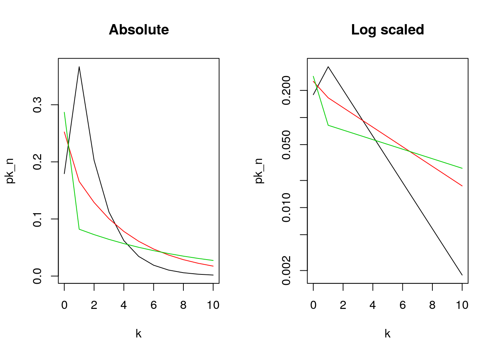
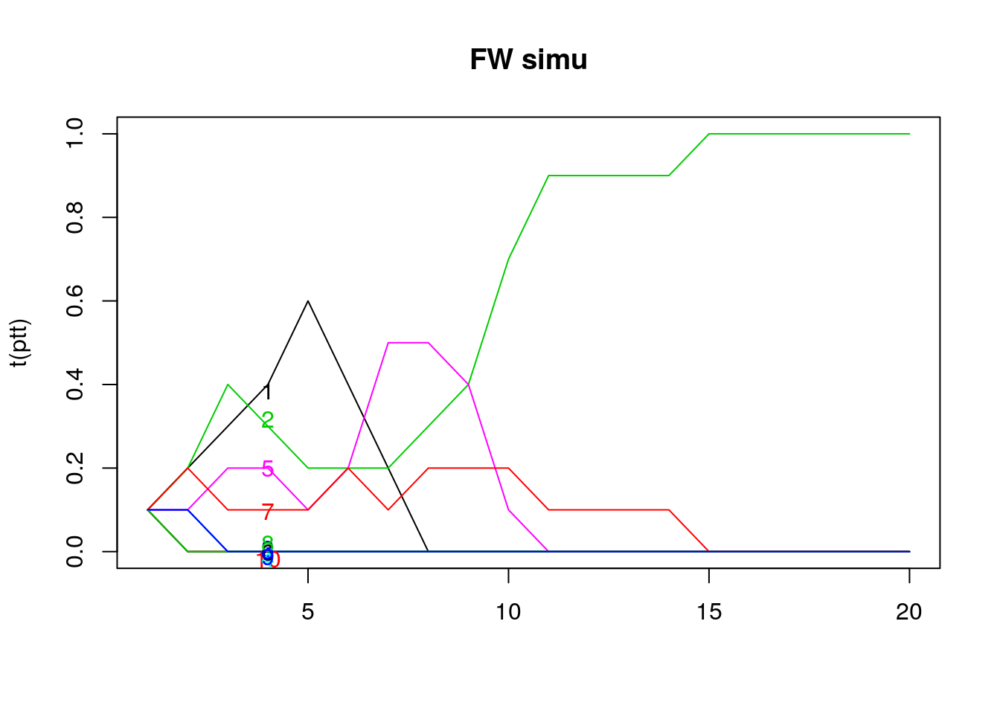
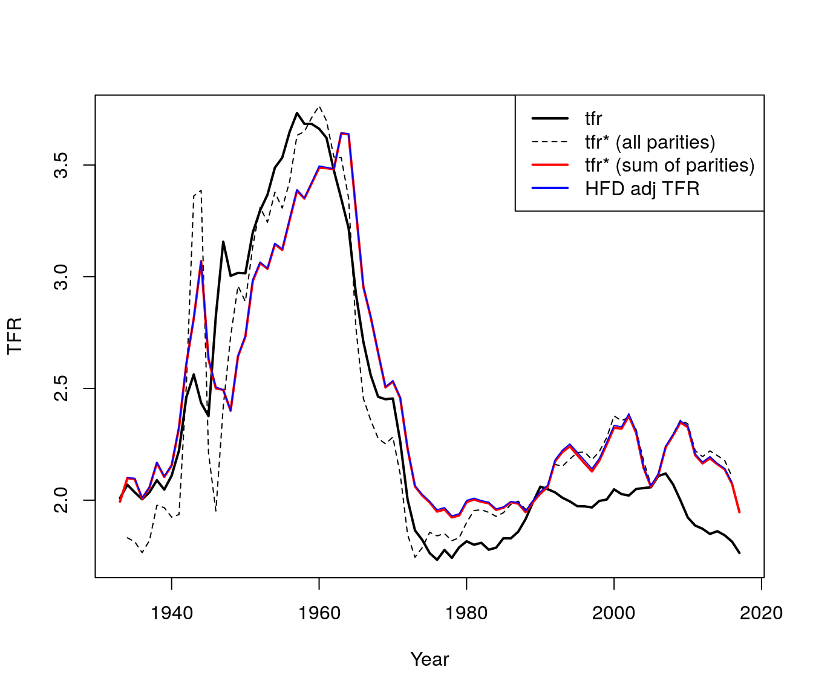
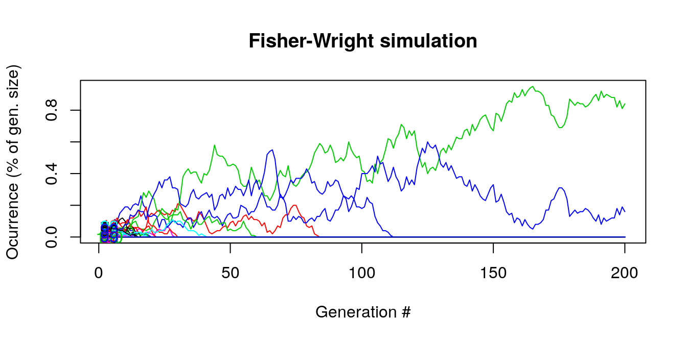
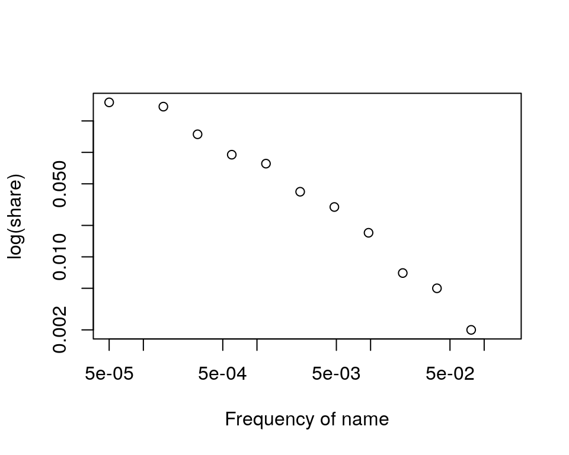
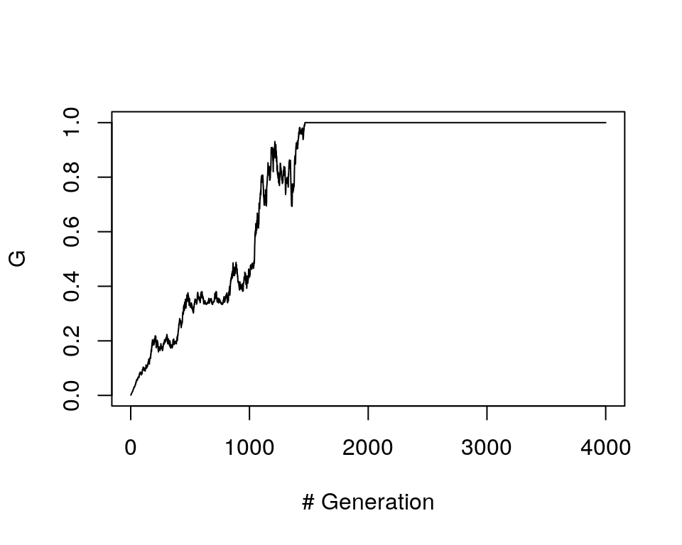
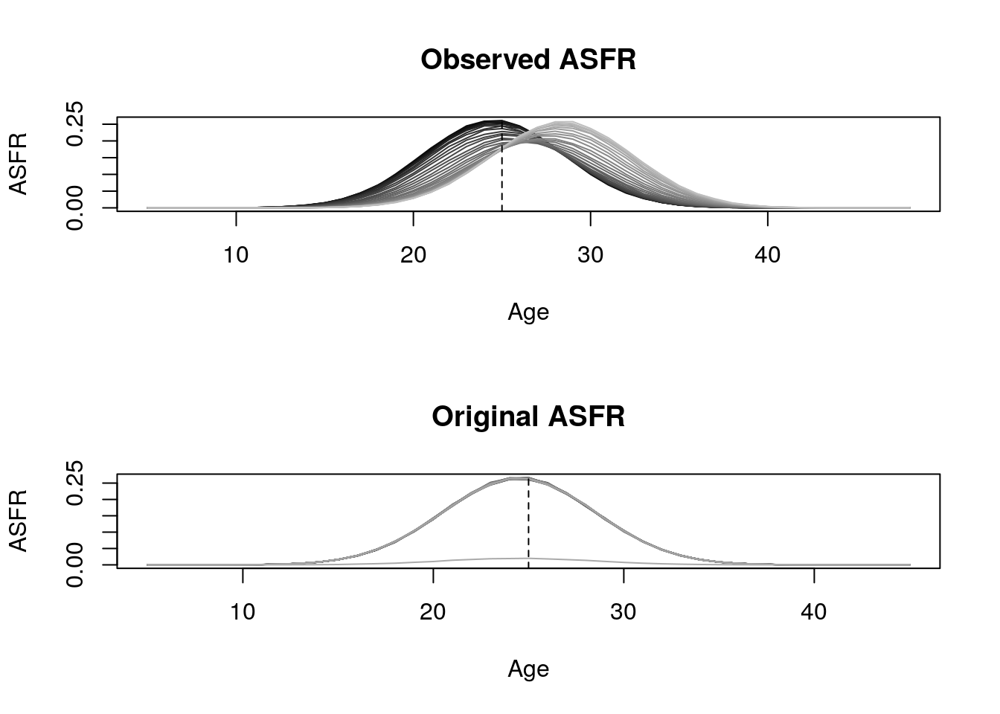
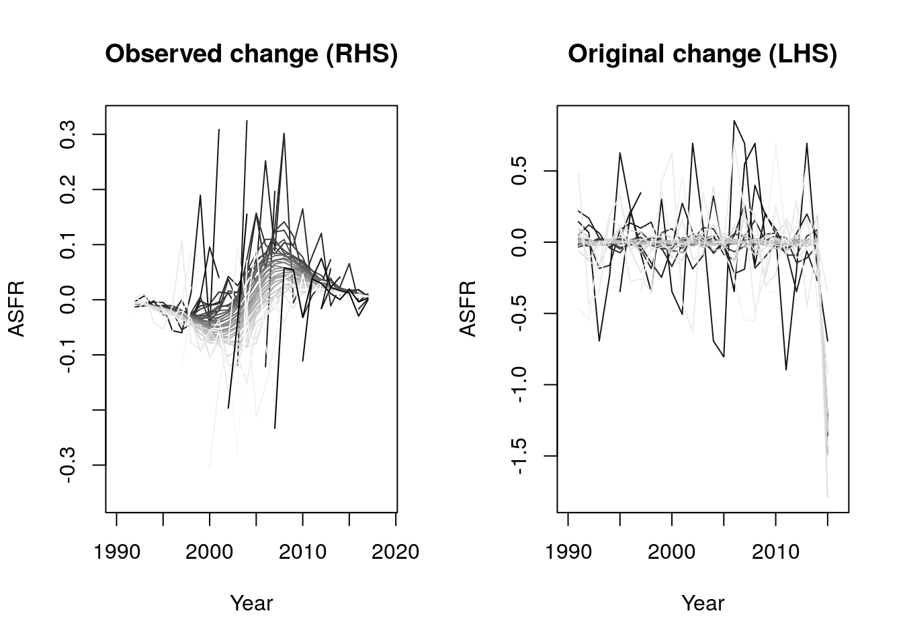
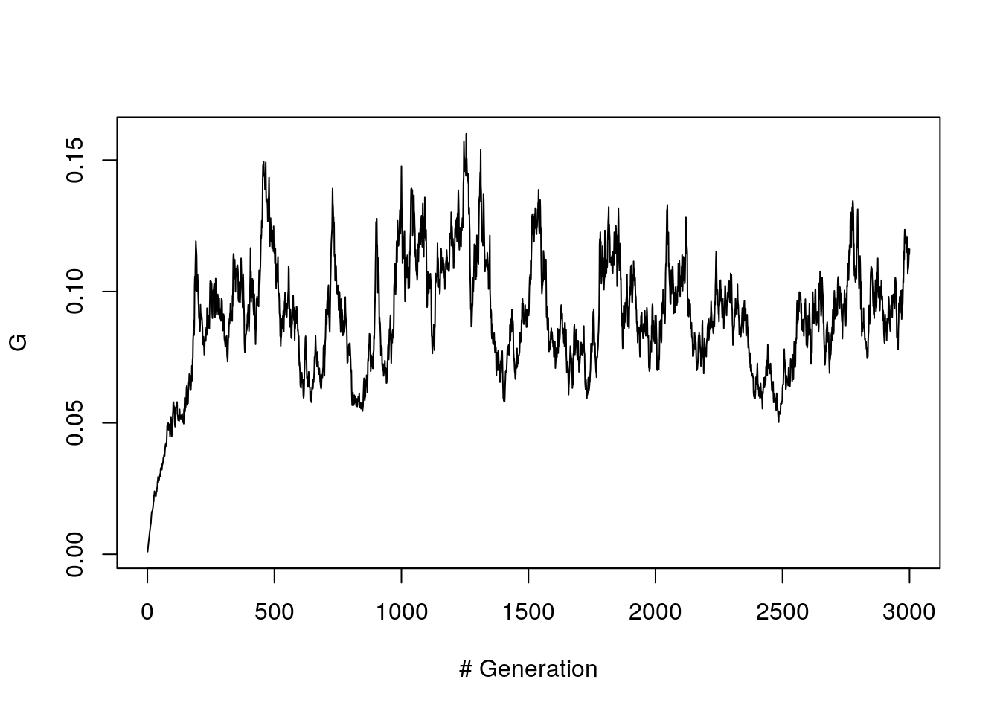

Chapter 8 Branching Processes
8.1 Outline
- The Galton-Watson-Bienaym'e Process: Motivation
- Simulating a branching process
- Moment generating functions
- Extinction probabilities
- The distribution of offspring of all generations
- A tractable offspring distribution
Additional resources:
- (“Introduction to Probability” 2006): An intermediate/advanced undergraduate textbook with good section on Branching Processes, with references to Harris and Keyfitz below.
- Harris (1964): Classic reference, but readable if you take your time. We will only read chapter 1 and will only consider the very easiest material.
- Surname Extinction: When will we all be “Smiths”? https://www.youtube.com/watch?v=5p-Jdjo7sSQ: Popular science video providing good motivation, but without authority.
- Is Your Surname about to Go Extinct? https://blogs.ancestry.com/cm/is-your-rare-surname-about-to-go-extinct/:A brief blog entry, mentionng of “endangered names”.
- Keyfitz (1968): Another introduction to branching process with the details of the empirical example cited by Grinstead and Snell.
8.2 Motivation
- Until now, we’ve focused on the hidden structures of heterogeneity.
- Now, we’re switching gears:
- Stochastic not deterministic
- In small populations, randomness matters. (Even when risks are homogeneous.)
- We will look at branching processes (“parents producing children”), next Fisher-Wright (“children choosing parents”), and then historical reconstruction from contemporary diversity (“coalescent”).
8.2.1 Very brief history of Branching Processes
- Bienaymé’s lost notes
- Old motivation: Galton and Watson’s: to see if elites were dying out because of “degeneration”
- Contemporary motivation: evolution and neutral genetic change. What is the chance that a mutant will survive?
- War-time motivation: to see how to build the bomb (chain reactions)
- Sociological: Anywhere “incipient dynamics” matter (will all of S. Korea be “Kim”?)
- Can we get variance of reproductive success from name disambiguation?
- It will give us a headstart on other (less realistic but easier) “drift” models.
8.2.3 Simulated examples and the questions they raise
Here are the chances, \(p_k\), that the first carrier passes on the virus to \(k\) people
| \(k\) | \(p_k\) |
|---|---|
| 0 | .3 |
| 1 | .4 |
| 2 | .3 |
What is \(R_0\), (aka \(m\))? This is the expected number of infected cases: \[\begin{aligned} R_{0} & = 0\times 0.3 + 1\times 0.4 + 2\times 0.3 \\ & = 1 \end{aligned}\] NOTE: is this correct?
Now assume that people will infect \(k\) other people based on a random number, for instance the last 4 digits of their phone number.
| \(k\) | \(p_k\) | digits |
|---|---|---|
| 0 | .3 | 0-2 |
| 1 | .4 | 3-5 |
| 2 | .3 | 6-9 |
- Let’s diagram one chance outcome, using my number “(xxx) xxx-9056”. As each of the four digits is associated with a probability of infecting more people, they can be seen as different the carrier generations. For instance, the first carrier has a probability \(p_k=0.3\) of infecting \(k=2\) other people. So that first carrier may infect 2.7 people, (3 for simplicity). Each of these three people will have a \(p_k=0.2\) of each infecting \(k=0\) people. Since they don’t infect anybody then there are no further carrier generations. In the table, we include their rows but the expected number of infected people is still 0 because the spreading stopped in generation 2.
| carrier generation # | random digit | \(p_k\) | expected # infected |
|---|---|---|---|
| 1 | 9 | 0.3 | \(2\times 0.3 = 2.7\) |
| 2 | 0 | 0.2 | \(0\times 0.3 = 0\) |
| 3 | 5 | 0.4 | 0 |
| 4 | 6 | 0.4 | 0 |
NOTE: does this sound reasonable?
8.2.4 What is a (Bienayme)-Galton-Watson branching process?
- \(p_k\): Each individual in each generation reproduces independently, following same offspring distribution, with \(p_k\) as the probability of having \(k\) offspring.
- \(Z_n\): The si\(Z\)e of the \(n\)’th generation \(Z_n\). (\(Z_1 \equiv 1\))
- \(p_0 > 0\): Some non-zero probability of no children.
- Variance: None of the \(p_k\) are 1

Galton’s original question
Some questions
- What is the chance \(d\) of eventual extinction (no “outbreak”)?
- Or, what is the distribution of surviving family sizes?
- What are the aggregate properties of many branching processes? (Mean growth, variance, time-paths, eventual size)?
8.3 Simulations of parents having children
k = 0:2 #number of possible children
p0 = .3; p1 = .3; p2 = .4;
p_k = c(p0, p1, p2) #probabilities of having k children
Z1 = 1 #initial cohort size
set.seed(9)
kids.of.Z1 = sample(x = k, size = Z1, replace = T, prob = p_k)
Z2 = sum(kids.of.Z1)
kids.of.Z2 = sample(x = k, size = Z2, replace = T, prob = p_k)
Z3 = sum(kids.of.Z2)
kids.of.Z3 = sample(x = k, size = Z3, replace = T, prob = p_k)
Z4 = sum(kids.of.Z3)| Generation # | Person ID | Total children | Generation size |
|---|---|---|---|
| 1 | 1.0 | 2 | 1 |
| 2 | 2.1 | 2 | 2 |
| 2 | 2.2 | 2 | 2 |
| 3 | 3.1 | 2 | 4 |
| 3 | 3.2 | 1 | 4 |
| 3 | 3.3 | 2 | 4 |
| 3 | 3.4 | 2 | 4 |
| 4 | 4.1 | 0 | 7 |
| 4 | 4.2 | 0 | 7 |
| 4 | 4.3 | 0 | 7 |
| 4 | 4.4 | 0 | 7 |
| 4 | 4.5 | 0 | 7 |
| 4 | 4.6 | 0 | 7 |
| 4 | 4.7 | 0 | 7 |
- Here’s a more visual representation.
- However, we can extend the number of generations in a function:
#A function
branch <- function(n_max = 30, pk = c(p0, p1, p2), Z1 = 1)
{
Z.vec <- rep(NA, n_max) # n_max handles the total number of generations
Z.vec[1] <- Z1
for (i in 1:(n_max-1))
{
Z.vec[i+1] <- sum(sample(x = k,
size = Z.vec[i],
replace = T,
prob = p_k))
}
return(Z.vec) # returns a vector of the number of children at every generation
}- Sometimes generations die out:
## [1] 1 2 2 4 5 2 2 3 2 0 0 0 0 0 0 0 0 0 0 0 0 0 0 0 0 0 0 0 0 0## [1] 1 1 2 1 1 0 0 0 0 0 0 0 0 0 0 0 0 0 0 0 0 0 0 0 0 0 0 0 0 0- Let’s see what happens with 20 trials (up to 30 generations). Not all generations go extinct here.
n_trials = 20
n_gen = 30
k = 0:2 #number of possible children
p0 = .3; p1 = .3; p2 = .4;
p_k = c(p0, p1, p2) #probabilities of having k children
Z1 = 1 #initial cohort size
Z.mat <- matrix(NA, n_trials, n_gen)
set.seed(131)
for (i in 1:n_trials)
Z.mat[i,] <- branch(n_max = n_gen)Figure 8.1: Generation size
- How many survive (out of 20)? log-scale

Figure 8.2: Generation sizes (log-scale)
## surviving
## extinct survive
## 0.5 0.5- How would you discribe the time path of the surviving lines? Let’s extend the number of generations to observe any long-term trends.
n_trials = 20; n_gen = 100
Z.mat <- matrix(NA, n_trials, n_gen)
set.seed(131)
for (i in 1:n_trials)
Z.mat[i,] <- branch(n_max = n_gen)Figure 8.3: Generation sizes (log-scale) over many generations
- What does this remind you of? (Hint: “Leslie”). (See Harris figure) NOTE: Josh, which Harris figure?
8.4 The Probability Generating Function: Our mathematical tool
“Extinction” vs “breakout”
- We see that in a super-critical (\(m > 1\)) branching process, if a line can survive a few generations and reach a large enough size, it will grow exponentially.
- What happens if \(m < 1\), if \(m = 1\)? Discuss. \[ h(z) = p_0 + p_1 z + p_2 z^2 + \ldots \]
- The PGF “keeps book” on the probabilities. The chance of \(k\) is the coefficient on \(z^k\).
- \(h(0)= p_{0}\)
- \(h(1)= p_{0} + p_{1}\)
- \(h'(1)= p_{1} + 2p_{2}\)
- The story of two brothers. A father has two sons. The probability generating function of their children combined is:
\[
h(z)^2 = (p_0 + p_1 z + p_2 z^2) \times (p_0 + p_1 z + p_2 z^2)
\]
If we multiply it out we get: \[ \begin{aligned} \left[h(z)\right]^2 = & p_0^2 + p_0 p_1 z + p_0 p_2 z^2 +\\ & p_1 z p_0 + p_1^2 z^2 + p_1 p_2 z^3 + \\ & p_2 z^2 p_0 + p_2 z^3 p_1 + p_2^2 z^4 \\ & = p_0^2 + (2p_0 p_1 )z + (2p_0 p_2 + p_1^2)z^2 + (2p_1 p_2)z^3 + p_2^2 z^4 \end{aligned} \]
The coefficients on \(z^0, z^1, \ldots\) tell us the probability that the sons will have \(k=0,1,2,3,4\) sons.
- What is the probability generating function for the distribution of grandsons?
- A man has two sons, with probability \(p_2\), so PGF in that case is \(p_2 [h(z)]^2\).
- But let’s sum over all possible numbers of sons. \[ p_0 + p_1 h(z) + p_2 [h(z)]^2 + p_3 [h(z)]^3 + \ldots \]
- This is the cumulative probability of drawing \(k\) children within a generation of size \(Z\)
- Which is? \[ h(h(z)) \]
- Can show PGF for the n’th generation is \[ h(h(h ... \mbox{$n$ times} h(z))) = h_n(z) \]
For instance, let’s get \(h_2(z) = h(h(z))\) for $ h(z) = p_0 + p_1 z + p_2 z^2$ \[\begin{aligned} h(h(z)) = & p_0 + p_1 \left[p_0 + p_1 z + p_2 z^2\right] + p_2 \left[p_0 + p_1 z + p_2 z^2\right]^2\\ = & p_0 + p_1 p_0 + p_1^2 z + p_1 p_2 z^2 + p_2p_0^2 + (2p_0 p_1 p_2)z + (2p_0 p_2^2 + p_2p_1^2)z^2 + (2p_1 p_2^2)z^3 + p_2^3 z^4 \end{aligned}\]
8.5 Extinction
- Extinction
- “Extinction is forever.”: So, the probability \(d_n\) of extinction by generation \(n\) can never decline over time. (Must it always rise?)
- Recursive extinction
- Is non-extinction “forever”?: If \(\lim_{n \rightarrow \infty} = d(\infty) < 1\), then this says there’s a chance \(1 - d(\infty)\) of eternal persistence. We’ll try to figure out more about what this means.
If the probability of a female line going extinct in \(n\) generations is \(d_n\), then this is equivalent to her daughter(s) line(s) going extinct in \(n-1\) generations. With \(p_k\) chance of having \(k\) daughters, we have \[ d_n = p_0 + p_1 d_{n-1} + \mbox{What is next term in series?} \]
What can we do with \[ d_n = h(d_{n-1})? \]
Well, remember that \(d_n\) is non-decreasing, and that it’s maximum can be no greater than \(1.0\). When \(d_n\) reaches it’s limit, say \(d\), we won’t need generational subscripts, \(d\) will be constant, and will obey \[ d = h(d) \]
- Thus, an amazing result: the probability of ultimate extinction is when the argument equals the PGF of the argument.
- Can \(d = 1\), can \(d < 1\)
- Try \(d = 1\). What happens?
- If we were to find a solution less than 1.0, how would we interpret that?
- Three cases
z = seq(0, 1.6, .01)
pk = c(.3, .0, .7); names(pk) <- 0:2
d <- pk["0"]
for (i in 1:10)
{
d <- pk["0"] + pk["1"]*d + pk["2"]*d^2
}
## super-critical
hz = pk["0"] + pk["1"]*z + pk["2"]*z^2
plot.fun <- function(z, hz)
{
plot(z, hz, type = "l", ylim = c(0,1.6),
ylab = "h(z)",
yaxs = "i", xaxs = "i", axes = F)
axis(1, at = seq(0, 1.5, .5))
axis(2, at = seq(0, 1.5, .5))
abline(0,1, col = "grey")
lines(z, hz)
axis(2, at = pk["0"], labels = "p0",
col.axis = "red", col = "red",
lwd = 1, las = 2)
}
par(mfrow = c(1,3), pty = "s")
plot.fun(z,hz)
points(c(d, 1),c(d, 1))
title("Super-critical (m > 1) \n 2 roots")
## sub-critical
pk = c(.3, .55, .15); names(pk) <- 0:2
hz = pk["0"] + pk["1"]*z + pk["2"]*z^2
plot.fun(z,hz)
title("Sub-critical (m < 1) \n 1 root")
points(1,1)
## critical
pk = c(.3, .4, .3); names(pk) <- 0:2
hz = pk["0"] + pk["1"]*z + pk["2"]*z^2
plot.fun(z, hz)
title("Critical (m = 1), \n 1 root")
points(1,1)
We can prove by answering: What is \(h'(1)\)? What is \(h(0)\)? Is \(h''(z) > 0\)?
- In the following cobwed diagram (like a staircase), we can see the values of \(h(p_0)\), \(h(h(p_0))\), \(h(h(h(p_0)))\), \(\ldots\)?
- The orange dot is \(h(p_0)\).
- The purple dot is \(h(h(p_0))\).
- The blue dot is \(h(h(h(p_0)))\).
- The points would converge until we reach the intersection between \(h(z)\) and the diagonal. 
- So how do we actually get \(d\)?
- Take the case where \(p_0 = .3\), \(p_1 = 0\), and \(p_3 = .7\) (the one I just plotted).
- Can do some algebra
- Or we can recursively iterate on the computer.
- Numerical recursion: below we start at the first value of the probability vector and sequentially try exploring values of \(h(z)\) until we find one that doesn’t change as much. We illustrate the case for up to 20 iterations.
- Take the case where \(p_0 = .3\), \(p_1 = 0\), and \(p_3 = .7\) (the one I just plotted).
pk = c(.3, .0, .7); names(pk) <- 0:2 ## our example
d <- pk["0"] # initial value
for (i in 1:20)
{
d <- pk["0"] + pk["1"]*d + pk["2"]*d^2
if (i %in% c(1,2,19,20))
print(paste(i, d))
}## [1] "1 0.363"
## [1] "2 0.3922383"
## [1] "19 0.428565882081349"
## [1] "20 0.428568100698915" - Did we get the right value? Apparently, yes! The green lines take as vertical and horizontal values our $d=0.428568100698915$ 
- Extinction and non-extinction revisited
- If \(m > 1\), there exists \(d\) bigger than 0 and less than unity.
- This means there’s some positive chance of extinction.
- But also some chance of never-extinction. (What form does never-extinction take?)
Figure 8.4: Generation sizes (log-scale) over many generations
Relevance to Corona virus?
8.6 Good and bad set-ups for branching process
Good
Unrestricted growth (frontier, new disease, start of a reaction)
A “null” model for understanding how apparent structure is just random outcomes. Families that die out didn’t have to have low \(NRR\). Just because most new viruses don’t break out, doesn’t mean they aren’t potentially dangerous (\(R_0 >> 1.0\)).
- A model that corresponds our mental model of running a generative process forward. (cf. Fisher-Wright)
Bad
When offspring of 1 depends on offspring of other (e.g., brothers inheriting a farm)
When resource constraints slow growth rates (e.g., Malthus: fertility of next gen depends on fertility of last; SIR model in disease spread)
Analysis. PGF is powerful but still we often have to deal with listing all possibilities.
- Big populations – law of large numbers means randomness doesn’t matter.
8.7 The distribution of offspring of all generations
- Means of offspring in generation \(n\)
- Is it “meaningful”? It tells you about the average number of offspring but it might be a skewed distributions because of the large number of zeros.
- We’ll show that unconditional mean is the expectation of random sum, which in this case is the expectation of a product. \[ \mathbb{E} Z_n = m^n \]
- What if \(m = 1\)?
- Mean size of surviving lines?
- Total probability is sum of conditional probabilities, times the chance of each condition: \[ \mathbb{E} Z_n = \mathbb{E}( Z_n | Z_n > 0) P(Z_n > 0) + \mathbb{E}( Z_n | Z_n = 0) P(Z_n = 0) \]
- where \(\mathbb{E}( Z_n | Z_n > 0) P(Z_n > 0)\) is the expected size given no extinction and \(\mathbb{E}( Z_n | Z_n = 0) P(Z_n = 0)\) is the expected size given extinction.
- What is mean size of surviving lines? That is, we want to find \(\mathbb{E}( Z_n | Z_n > 0)\)
- Hint 1: \(P(Z_n = 0) = d_n\)
- So \(P(Z_n > 0) = 1- d_n\)
- Hint 2: \(\mathbb{E} Z_n = m^n\)
- Also note that by definition, \(\mathbb{E}( Z_n | Z_n = 0)=0\) \[ \begin{aligned} \mathbb{E} Z_n = m^n = & \mathbb{E}( Z_n | Z_n > 0) (1- d_n) + (0)d_n\\ m^n = & \mathbb{E}( Z_n | Z_n > 0) (1- d_n)\\ \mathbb{E}( Z_n | Z_n > 0) =&\frac{m^n}{(1- d_n)} \end{aligned} \]
- Hint 1: \(P(Z_n = 0) = d_n\)
- Let’s check our result using simulation for 1000 trials. Note that for this case \(m= 0\times p_0 + 1\times p_1 + 2\times p_2= 1\), so \(m^n= 1\)
n_trials = 1000; n_gen = 100
p0 = .3; p1 = .4; p2 = .3 ## what is m?
p_k <- c(p0, p1, p2)
k <- 0:(length(p_k)-1)
Z.mat <- matrix(NA, n_trials, n_gen)
set.seed(131)
for (i in 1:n_trials)
Z.mat[i,] <- branch(n_max = n_gen) - Using the means for all 1000 simulations, we calculate \(\mathbb{E} Z_n\) (left plot), \(d_n\) (center plot) and \(\mathbb{E}( Z_n | Z_n > 0)\).
- Using the means for all 1000 simulations, we calculate \(\mathbb{E} Z_n\) (left plot), \(d_n\) (center plot) and \(\mathbb{E}( Z_n | Z_n > 0)\).
Zn_bar = apply(Z.mat, 2, mean) #expected value Z_n (E(Z_n))
n <- 1:ncol(Z.mat)
proportion.zero <- function(x){prop.table(table(x == 0))["TRUE"]}
d_n = apply(Z.mat, 2, proportion.zero) # fraction extinct
Z.mat.na <- Z.mat; Z.mat.na[Z.mat == 0] <- NA
Zn_surv_bar = apply(Z.mat.na, 2, mean, na.rm = T) #expected value of survivors (E(Z_n|Z_n>0))
- Proving \(\mathbb{E} Z_n = m^n\)
- Ingredients
- \(h(z)=p_{0}+p_{1}z+ p_{2} z^2+ \ldots\)
- \(h'(z)=p_{1}+ 2zp_{2} + \ldots\)
- Specifically, when \(z=1\):
- \(h(1)= 1\)
- \(h'(1) =(1)p_1+ (2)p_2+(3)p_3+\ldots= \sum_1^k k p_k = m = \bar{Z}\)
- \(h_n'(1) = m_n = \bar{Z}_n\)
- \(h_{n+1}(z) = h(h_n(z))\)
- Derivation: Take derivative of \(h_{n+1}(z)\) \[ \begin{aligned} h'_{n+1}(z)&= h'_n(h(z)) h'(z) \\ h'_{n+1}(1)&= h'_n(h(1)) h'(1) \\ &= h'_n(1) m \\ &= \bar{Z}_n m \end{aligned} \] NOTE: Can’t find the complete derivation. Help!
- Ingredients
- Variance result.
- We proved that \(\mathbb{E} Z_n = m^n\) using recursion. For the variance, one can also do recursion but this time we start by taking the second derivative of \(h(z)\)
- For \(m = 1\), \[ \sigma_n^2 = n \sigma^2 \]
- Also a result for \(m\neq 1\)
- What does increasing variance mean for critical case? (Does this make sense?)
- What happens to variance of lines that survive? Is it bigger or smaller than unconditional variance?
Variance in our simulation increases with generation number:
 Distribution of \(Z_n\)
Z20 <- table(table(Z.mat[,20]))
Z5 <- table(table(Z.mat[,5]))
par(mfrow = c(2,2))
plot(Z20[Z20 < 100])
plot(log(Z20[Z20 < 100]))
plot(Z5[Z5 < 100])
plot(log(Z5[Z5 < 100]))
8.8 Geometric offspring distribution
For \(k = 1, 2, \ldots\), \[ p_k = b c^{k-1} \]
For \(k = 0\), \[ p_0 = 1 - p_1 - p_2 - \ldots . \]
Let’s solve for \(p_0\), using the geometric series sum, for \(a < 1\),
\[
1 + a + a^2 + \ldots =
1 / (1-a)
\]
\[
\begin{aligned}
p_0 &= 1 - (p_1 + p_2 + p_3 +\ldots) \\
&= 1 - (bc^{0}+ bc^{1} +b c^{2} + \ldots) \\
&= 1 - (b+ bc^{1} +b c^{2} + \ldots) \\
&= 1 - b(1+ c^{1} + c^{2} + \ldots) \\
&= 1- \frac{b}{1-c} \\
\end{aligned}
\]
So, now we have all \(p_k\) used as inputs for \(h(z)\) given value for \(b\) and \(c\).
A picture, Lotka’s parameters for 1920. The graph shows the probability of having exactly \(k\) number of girls. When \(k=0\) then all children were boys.
b = 0.2126 ; c = 0.5893
kk = 1:10 ; p_kk = b * c^(kk-1)
p0 = b/(1-c)
k = c(0, kk) ; p_k = c(p0, p_kk)
Realism? See Table 10.3, p 386, Grinstead and Snell.
8.8.1 The Geometric Distribution’s simple PGF
\[ h(z) = p_0 + p_1 z + p_2 z^2 + \ldots \] With geometric \(p_k\) \[ h(z) = p_0 + \sum_{k= 1}^\infty b c^{k-1} z^k. \] Substituting for \(p_0\) and rewriting \[ h(z) = \left( 1 - \frac{b}{(1-c)}\right) + bz \sum_{k= 1}^\infty (cz)^{k-1}. \] Substituting \(j = k-1\), \[ h(z) = \left( 1 - \frac{b}{(1-c)}\right) + bz \sum_{j= 0}^\infty (cz)^{j} = \left( 1 - \frac{b}{(1-c)}\right) + {bz \over (1 - cz)} \]
The PGF is now “tractable”
- \(m\) and extinction
\[
h(z) = \left( 1 - {b / 1-c}\right) + {bz \over 1 - cz}
\]
- Please solve for \(m\). (Hint: \(h'(1)\)).
- We kmow that \(h'(1)=m\), so we start off taking the first derivative of \(h(z)\) given the tractable form. \[ \begin{aligned} h'(z) &= \frac{bz(-c)-(1-cz)b}{(1-cz)^2}\\ &= \frac{-1}{(1-cz)^2}\\ h'(1) &= \frac{-1}{(1-c)^2} = m\\ \end{aligned} \]
- What is \(m\) with Lotka’s \(b\) and \(c\)? \[ m= \frac{-1}{(1-0.5893)^2}= 5.928579 \] NOTE: does this look reasonable?
- Please solve for \(m\). (Hint: \(h'(1)\)).
- We solve \(z = h(z)\) with a bunch of algebra to get
\[
d = {1 - b - c \over c(1-c)}
\]
- How does \(d\) depend on \(b\) and \(c\)? \(d\) decreases with \(b\) at a rate of \(\frac{-1}{c(1-c)}\) and changes at rate \(\frac{-(1-b)(1-2c)-c^2}{c^2(1-c)^2}\).
Big payoff: the full distribution of \(Z_n\)} See Grinstead and Snell p. 385
8.8.2 A plot of Keyfitz’s numbers for generations 1, 2, and 3. Is it exponential for \(k > 0\)?
## b = 0.2126 ; c = 0.5893 ## lotka
b = 0.3666; c = .5533 ## Keyfitz (from GS)
m = b / (1-c)^2 ## [1] 1.260416
d = (1 - b - c) / (c * (1-c)) #[1] 0.8185088
par(mfrow = c(1,2))
for (i in 1:3)
{
n = i
p0_n = d * (m^n - 1)/ (m^n -d)
j = kk
pj_n = m^n *
((1-d) / (m^n - d))^2 *
((m^n - 1)/(m^n - d))^(j-1)
pk_n <- c(p0_n, pj_n)
if (i == 1)
plot(k, pk_n, type = "l", log = "")
if (i > 1)
lines(k, pk_n, col = i)
}
for (i in 1:3)
{
n = i
p0_n = d * (m^n - 1)/ (m^n -d)
j = kk
pj_n = m^n * ((1-d) / (m^n - d))^2 * ((m^n - 1)/(m^n - d))^(j-1)
pk_n <- c(p0_n, pj_n)
if (i == 1)
plot(k, pk_n, type = "l", log = "y", main="Log scaled")
if (i > 1)
lines(k, pk_n, col = i)
}
Applications
We have exponential distribution with a few very large lines, and a lot of small lines.
- Distribution of neutral alleles
- Distribution of family lines (Y-chromosome, mtDNA, last names)
Our result With geometric \(p_k\), we get geometric \(Z_n\), for all \(n\).
Conjecture: geometric is to BP as gamma is to frailty?
8.9 Branching Processes and Covid-19
- What is the BP that they are studying? Is it contagion, social contacts, or ?
- What do they assume about the BP?
- Do they use any analytical results or just simulation? Why?
- Best feature of paper?
- Worst feature of paper?
- Inspire any other approaches?
References
Harris, Theodore Edward. 1964. “The Theory of Branching Process.” Rand Corporation. https://www.rand.org/content/dam/rand/pubs/reports/
“Introduction to Probability.” 2006. https://math.dartmouth.edu/~prob/prob/prob.pdf. Keyfitz, Nathan. 1968. “The Branching Process as a Population Model.” In Introduction to the Mathematics of Populations with Revisions, 399–412.